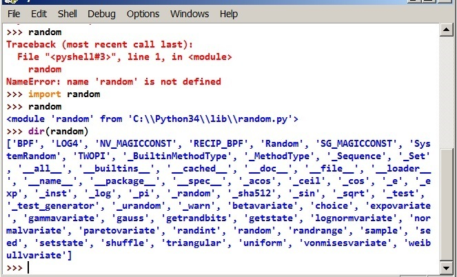
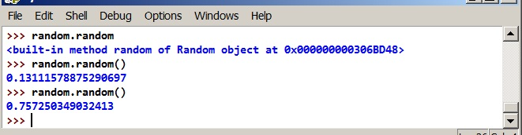
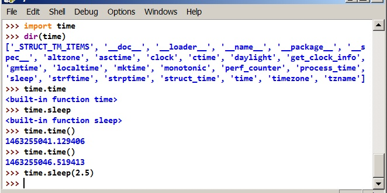

PYWS03 - Use the IDLE - Write the first Python script¶
Using the Python IDLE as an editor¶
There are many editors and developement environments available for Python programmers. But for the first examples the IDLE (Integrated DeveLopment Environment) is sufficient and its already there.
The IDLE has two windows:
The console window and the editor window. The console window works almost exactly like the Python console on the Windows command line. From the console use the
Windowsmenu to witch to an editor window.The editor window supports syntax highlighting, that is the different elements of the python syntax are displayed in different colors.
From an editor, use the
run+Python shellmenue to switch to the console, or use the[F5]key to start the program, which runs in the console window.
From the File menu it’s possible to open more editor windows, all of them share the same console window. The Options menue allows to configure the IDLE (e.g. set Autosave mode to No Prompt).
Ladies, start your engines!¶
Oh yes, Gentlemen, do the same!
Start the IDLE, go to the editor window (File + New) and type your first line of code:
# python3
This tells the reader (and sometimes the operting system), that it is a Python version 3.x script. (Actually Python > 2.x). It is optional, but a good habit.
And a second line to get back something visible (don’t type the three dots, they only indicate, that it is a continuation):
...
print("Hello World!")
Before we can start the program, it must be saved. File + save as.. in our Python work folder. Then press [F5] (or Run menu + Run Module).
Taddaaahh
There is one important point here. It is strongly recommended, that you type in all the following examples. Do not copy from this documentation, but make your own typing errors and correct them until everything works. We are here for the learning experience.
Introduction - The basic blocks of a Python script¶
main() Function¶
Our script should have a main() function. Lets type the following into our editor and start it:
# python3
"""
A first Python script with a main() function
"""
def main():
print("Hello World!")
main()
- Think of the sequence of instructions:
- ignore the comments
- execute the
defstatement, which assigns a block of code to the namemain - execute the
main()function call - execute the
print()statement inside themaincode block - return from the
main()function - reach the end of the script
import statement¶
Let’s use some of the many tools, which Python has for us. Let’s import a random number generator. To do this, go to the Python console and type:
random
import random
random
dir(random)
The result should be like this:
- What happened here? ::
- first, the name
randomis not defined - the
import randomhas no output (No news is good news!) - now, the name
randomis known. Theimportstatement assigned something to the namerandom, and it is: amodule, which is one of the basic types of Python objects. Python is so nice, as to tell us, where it found the module. Who is interested, might go to that location and find the source code of therandommodule. - use the
dir()function, to see whats inside therandommodule.dir()returns a list of names, which are members of therandommodule.
- first, the name
Lets pick one of the names: random. To see, what it is, we type:
random.random
The . is the member access operator, so, when we access the random member of the random module, Python tells us, what it is: a method. For now just accept: a method is a kind of function. And a function can be called! Let’s do it:
random.random()
What we get, is a floating point number, a value between 0 and 1. Every time, we call the method, we get a different value, which is random. The output should be like this:
Let’s try the import statement again:
import time
dir(time)
time.time
time.sleep
time.time and time.sleep are functions:
time.time()
time.sleep(2.5)
This is what we get:
The time.time() returns a floating point number, which gives the value of the computers internal system clock. The number is the seconds passed since the 1.1.1970 and was defined like this by the early developers of the Unix Operating System. We will learn better ways to express dates and times, but the time() function is ok to find out the time difference between two events.
The time.sleep() takes a floating point number as an argument and returns only after that number of seconds has passed. Nothing happens in that time, the program just has to wait until the sleep() function returns.
if - elif - else statements¶
We go back to the editor and extend our program. The IDLE has a nice menu option File + Save copy as..., which allows, to save the current text under a new name, with out changing the current file name.
# python3
"""
This script imports the random module and introduces the ``if`` statement
"""
import random
def main():
print("How do I feel?")
mood = random.random() # mood is between 0 and 1
if mood > 0.7:
print("I am happy")
print("Good bye")
main()
We see the general structure of an if statement:
if boolean_expression:
indented block of statements
next statement
The indented block is only executed, when the boolean expression is True. The indentation is always preceeded by a line enging with a colon :. We saw this already at the def statement and we will see it again with some other statements.
To get an unhappy answer, we use the else statement:
...
if mood > 0.7:
print("I am happy")
else:
print("I am sad")
print("Good bye")
To let our program express more different moods, we can do this:
...
if mood > 0.7:
print("I am happy")
elif mood > 0.5:
print("I am fine")
elif mood > 0.2:
print("I am ok")
else:
print("I am sad")
print("Good bye")
The if and elif statements are not restricted in any way, they can test whatever condition is appropriate. The conditions are tested from top to bottom, the first True value executes the indented block and terminates the statement. The else block is optional and is only executed, if none of previous contitions is True.
More about functions¶
Say, we want to use the mood evaluation in more than one context, then it makes sense to create a separate function of it. The function will get a mood level as an argument and return a text:
def express_mood(level):
if level > 0.7:
mood_text = 'happy'
...
return mood_text
The name level in the function definition is a name for some value, which was defined outside the function, but we can use that name inside to work with that value. The return statement returns one value, which is the result of the function call. The function call may look like this:
emotion = express_mood(mood)
The function knows nothing about mood or emotion. Also the world outside the function knows nothing about mood_text or level. That is how functions communicate with the outside world, the values can be shared, but the names are only locally known. (There will be more about this rule later)
This should be enough information to write the complete program with a separate function for the mood_level. Write and run the code, before checking this link to the result.
See the sample code
Add more to it: Loops and timers¶
Extend the nonsense script further
The program shall tell us, how its mood changes over time. For this we must introduce repetitions and a time component. Lets import the time module:
...
import time
and change the main() function:
...
def main():
print("How do I feel?")
counter = 7 # express the mood 7 times
while counter:
counter = counter - 1
time.sleep(1.5)
mood = random.random()
emotion = express_mood(mood)
print("I am", emotion)
print("Good bye")
...
The while instruction is easy: while the boolean expression is True, the indented block of code is executed. The condition is tested first, so the block may be executed zero times.
The time.sleep() just adds some time between the “mood confessions”.
What we learned about the while loop is simple. But because we talk of Python here, there should be more to discover. And there is! 😊
Use the break and else statements in loops¶
Change the script like this:
...
while counter:
counter = counter - 1
time.sleep(0.1) # (1.5)
mood = random.random()
emotion = express_mood(mood)
if emotion == 'sad':
print("I don't want to talk anymore")
break
print("I am", emotion)
else:
print("Good bye")
Now, when the program detects, it is in bad mood, it would give us an impacient comment and stop. We get the Good bye message only, if the program never gets really sad. The short rule is: either break or else.
How to process a list of elements?¶
Say, there is a list of names, like:
namelist = ['John', 'James', 'Alice', 'Lucie', 'Mark', 'Tamara', 'Harry']
How to process this list (simple print)? This is one possible way, to do it:
size = len(namelist)
index = 0
while index < size:
print(namelist[index])
index = index + 1
It will work, but its not the best way to do it in Python.
Loop over iterations: The for loop¶
First things first: What is an iteration?
In iteration is the processing of a sequence. The elements of the sequence are processed one by one. The term iterable refers to something, which can be treated as a sequence of elements. In Python there are many things that are or behave like iterables. There are also many functions, which accept a iterable as an argument. A few examples here:
- The
list()function makes a list from an iterable- The
`tuple()function makes a tuple- The `` for`` x
instatement starts a loop over an iterable
Examples for iterables are:
- string - returns individul characters
- list, tuple - return their elements
- range() function - returns numbers
- open file - return the lines of a file
- os.listdir - return the files in a disk folder
- generator - a special form of a function, return values one by one
The most general form to process an iteration is the for loop. And yes, its a good idea, not to copy but to really type the code and run it:
for char in 'hello':
print(char)
for num in range(3,8):
print(num)
with open('filename') as fi: # insert the name of a real (short) file
for line in fi:
print(line, end='') # lines from a file come with newlines
namlist = "London Paris Rome Berlin Lisbon Madrid".split()
for name in namlist:
if name[0] != 'L': # ignore some names
continue
print(name)
There is a little trick here: The last example used the continue statement, which was not exlained yet: The continue statement jumps directly to the begin of the loop. A for loop will fetch the next element, a while loop will test the condition again.
For the everyday usage of the for statement, the above explanations are sufficient. They are however not the complete truth, there are more details to observe. For a complete description of the iterators, see the Python documentation about Built-in types / Iterator types.
Github as a communications platform¶
GIT is a version control system. GIT allows to track changes made to software packages. GITHUB is a web site, which hosts many(!) software packages. The package referring to this Python workshop documentation is hosted at https://hans-boden.github.io
We can download individual pieces of documentation and code examples, or view them online.
It is optional, but it is recommended to get a local copy of the PYWS package (called a repository). To make a local copy of a GITHUB repository, we need to install the GIT software. Download GIT from https://git-scm.com/downloads.
After git is installed, there should be a git shell application, which opens a console window. Try to enter:
git --version
to verify, that git actually works. Now change the current directory to you python workshop folder. Then type:
git clone https://github.com/hans-boden/hans-boden.github.io.git
to create a local copy of the GITHUB documentation. Change into the new folder with cd and type git status. This will show, if the status of the local copy (clone) is still in synch with the GITHUB original (master). If the GITHUB repository has changed, use the command git pull to update the local copy. It will copy only the necessary parts to get the local copy in sync with the master again.
Do not make any changes to the files inside the local copy of the repository